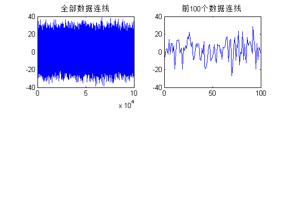
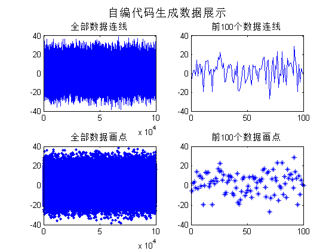
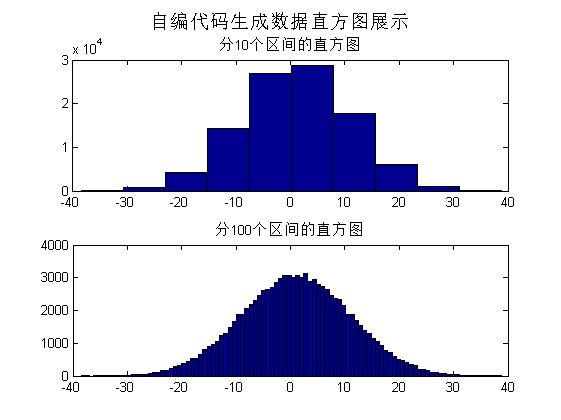
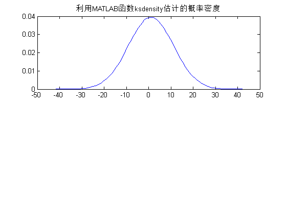
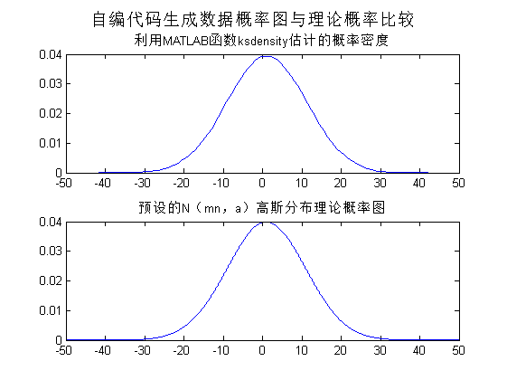

实验 I 之2 高斯分布随机数的产生，统计特性分析及计算机仿真
Contents
实验 I 之2 高斯分布随机数的产生，统计特性分析及计算机仿真
2016.10.31
准备环境
clear all close all clc % clf
生成高斯分布随机数
mn=1; a=10; num=100000; % % %自编变换法 rnd1， mn：均值，a：标准差，num：数据点数 % % [s1,s2] = rnd1(mn,a,num); %自编中心极限累加法rnd2， mn：均值，a：标准差，num：数据点数 [s1] = rnd2(mn,a,num);
展示数据并校验
s=s1;
画线
figure, subplot(2,2,1),plot(s) %全部 title('全部数据连线') subplot(2,2,2),plot(s(1:100)) %前100个数据 title('前100个数据连线')
画点
subplot(2,2,3),plot(s,'.') %全部 title('全部数据画点') subplot(2,2,4),plot(s(1:100),'*') %前100个数据 title('前100个数据画点') suptitle('自编代码生成数据展示')
画直方图
figure,subplot(2,1,1),hist(s) title('分10个区间的直方图') subplot(2,1,2),hist(s,100) title('分100个区间的直方图') suptitle('自编代码生成数据直方图展示')
估计随机数的分布
[f,xi]=ksdensity(s);
figure,subplot(2,1,1),plot(xi,f);
title('利用MATLAB函数ksdensity估计的概率密度')
 对照预设的N（mn，a）高斯分布概率图
t=-50:1/100:50; y=1/(sqrt(2*pi)*a)*exp(-(t-mn).^2/(2*a*a)); subplot(2,1,2),plot(t,y); title('预设的N（mn，a）高斯分布理论概率图') suptitle('自编代码生成数据概率图与理论概率比较')
求随机数的均值、均方值、一维三阶原点矩、一维四阶原点矩
m = zeros(1,4); %生成[0 0 0 0] for i = 1 : num m(1) = m(1) + s(i); % 均值 m(2) = m(2) + s(i)^2; % 二阶矩 m(3) = m(3) + s(i)^3; %三阶 m(4) = m(4) + s(i)^4; %四阶 end m=m/num; disp(['生成数据的数字特征']) disp(['均值 = ',num2str(m(1))] ); disp(['均方值 = ',num2str(m(2))] ); disp(['三阶原点矩 = ',num2str(m(3))] ); disp(['四阶原点矩 = ',num2str(m(4))] );
生成数据的数字特征 均值 = 1.0417 均方值 = 100.4773 三阶原点矩 = 297.9124 四阶原点矩 = 29346.15
验证均值和方差
meanValue = mean(s); stdValue = std(s); disp('----------') disp(['预设参数，均值为：',num2str(mn),',标准差为：',num2str(a)]); disp(['计算参数，均值为：',num2str(meanValue),',标准差为：',num2str(stdValue)]); meanErr = (meanValue - mn)/(mn)*100; stdErr = (stdValue - a)/(a)*100; disp(['相对误差分别为：',num2str(meanErr),' %, 和：',num2str(stdErr),' %']) disp('两者相近。从直方图和低阶矩上看，基本符合要求。')
---------- 预设参数，均值为：1,标准差为：10 计算参数，均值为：1.0417,标准差为：9.9696 相对误差分别为：4.1657 %, 和：-0.30386 % 两者相近。从直方图和低阶矩上看，基本符合要求。